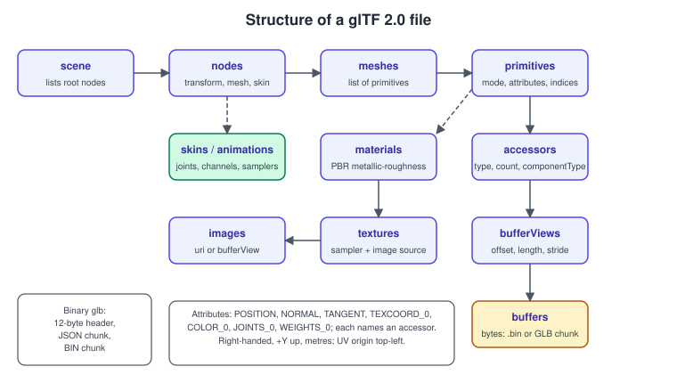
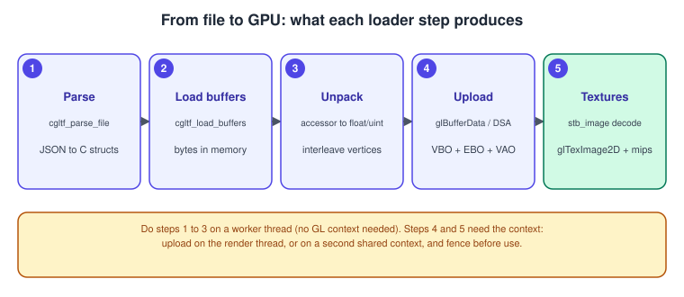

Asset Loading: glTF and OBJ
|
This content was generated with the assistance of AI and should be verified against the official documentation before being relied on in production. |
OpenGL draws buffers of numbers; it knows nothing about models, scenes or image files. Every program therefore needs a loader that reads a file format, turns it into vertex arrays, index arrays, textures and materials, and uploads them with the calls explained on the earlier pages. This page covers the two formats a hobby or teaching program meets first, the old and simple Wavefront OBJ and the current Khronos standard glTF 2.0, the libraries that read them, and the upload of images including compressed KTX2 textures. It uses the shared Bookshelf asset, bookshelf.glb, as the running example.
The facts were checked in November 2026. The versions documented are OpenGL 4.6 (GLSL 4.60) with a 4.1 core baseline for the program, OpenGL ES 3.2, glTF 2.0 and KTX 2.0. The libraries are single-file C or C++ code (cgltf, tinyobjloader, stb_image) that you vendor into your project; check each library’s repository for its current release and API before upgrading. The general theory of formats and scene graphs is in Scene Graphs and Asset Formats and the vertex layouts being filled are explained in Buffers and vertex specification.
Choosing a format
| Format | Strengths | Weaknesses |
|---|---|---|
OBJ (with an MTL file) |
Plain text, trivial to read and write, supported by every modelling tool. |
No scene hierarchy, no animation, no binary data, materials are old Phong-style (ambient, diffuse, specular) with only vendor extensions for PBR; separate index per attribute (position, texcoord, normal), so a loader has to rebuild the vertex data. |
glTF 2.0 ( |
Designed for runtime delivery: binary buffers laid out for direct upload, node hierarchy, PBR metallic-roughness materials, cameras, skins and animations, extension mechanism. Khronos standard, also used by WebGL and engines. |
Heavier loader; the data is indexed once per vertex, so no deduplication, but you must handle accessor strides, sparse accessors, different component types and node transforms. |
KTX 2.0 |
Container for GPU texture data: mipmaps, cube maps, arrays, supercompression, Basis Universal universal textures that transcode to the block format the device supports. |
Needs the KTX library for reading and transcoding. |
Prefer glTF for anything beyond a single static mesh. Keep OBJ for quick experiments or when the source tool offers nothing else. Older material, such as the Android and iOS OpenGL ES 2.0 books that load OBJ files with hand-written parsers, stays valid for the OBJ format itself, but those books predate glTF and the PBR materials it carries.
OBJ and tinyobjloader
An OBJ file lists v positions, vt texture coordinates, vn normals, and f faces whose corners are v/vt/vn
index triples, each index counted from 1 and independent of the others. A face with 4 or more corners is a polygon.
OpenGL’s vertex model has one index per vertex that selects every attribute at once, so the loader must create one
output vertex per distinct triple. A cube with 8 positions and 6 normals becomes 24 vertices.
#define TINYOBJLOADER_IMPLEMENTATION
#include "tiny_obj_loader.h"
#include <glad/gl.h>
#include <glm/glm.hpp>
#include <unordered_map>
#include <vector>
#include <stdexcept>
struct Vertex { glm::vec3 pos; glm::vec3 normal; glm::vec2 uv; };
struct MeshData {
std::vector<Vertex> vertices;
std::vector<uint32_t> indices;
};
MeshData loadObj(const std::string& path) {
tinyobj::ObjReaderConfig cfg;
cfg.triangulate = true; // quads and polygons become triangles
tinyobj::ObjReader reader;
if (!reader.ParseFromFile(path, cfg))
throw std::runtime_error("OBJ: " + reader.Error());
const auto& attrib = reader.GetAttrib();
struct Key {
int v, vt, vn;
bool operator==(const Key& o) const { return v == o.v && vt == o.vt && vn == o.vn; }
};
struct KeyHash {
size_t operator()(const Key& k) const {
return std::hash<int>()(k.v) * 73856093u ^ std::hash<int>()(k.vt) * 19349663u
^ std::hash<int>()(k.vn) * 83492791u;
}
};
std::unordered_map<Key, uint32_t, KeyHash> seen;
MeshData out;
for (const auto& shape : reader.GetShapes()) {
for (const auto& idx : shape.mesh.indices) {
Key key{idx.vertex_index, idx.texcoord_index, idx.normal_index};
auto it = seen.find(key);
if (it == seen.end()) {
Vertex v{};
v.pos = {attrib.vertices[3 * idx.vertex_index + 0],
attrib.vertices[3 * idx.vertex_index + 1],
attrib.vertices[3 * idx.vertex_index + 2]};
if (idx.normal_index >= 0)
v.normal = {attrib.normals[3 * idx.normal_index + 0],
attrib.normals[3 * idx.normal_index + 1],
attrib.normals[3 * idx.normal_index + 2]};
if (idx.texcoord_index >= 0) // OBJ v runs bottom to top, as OpenGL does
v.uv = {attrib.texcoords[2 * idx.texcoord_index + 0],
attrib.texcoords[2 * idx.texcoord_index + 1]};
it = seen.emplace(key, (uint32_t)out.vertices.size()).first;
out.vertices.push_back(v);
}
out.indices.push_back(it->second);
}
}
return out;
}Source: tinyobjloader repository
Things that go wrong with OBJ: a file without vn lines needs normals computed by the loader (average of the face normals
per smoothing group); positions in centimetres or Z-up conventions differ between tools, so check the scale and the
axes; the MTL file path is relative to the OBJ and often missing; texture coordinates are bottom-up in OBJ, matching
OpenGL, so do not flip them unless the image file was flipped.
glTF 2.0 structure
A glTF asset is a JSON description plus binary data. The .gltf form keeps the JSON, one or more .bin buffers and the
images as separate files, optionally with the data embedded as base64 text. The .glb form is a single binary file:
a 12-byte header, a JSON chunk and a binary chunk, with the images usually stored in the binary chunk too.
bookshelf.glb is a glb with the textures embedded.

Reading the graph from the top: a scene lists root nodes. A node has a local transform (a matrix, or translation,
rotation and scale properties), optional children, and optionally a mesh, a camera or a skin. A mesh is a list of
primitives; each primitive has a draw mode (default triangles), a dictionary of vertex attributes (POSITION, NORMAL,
TANGENT, TEXCOORD_0, COLOR_0, JOINTS_0, WEIGHTS_0), each of which names an accessor, an optional indices accessor
and a material. An accessor describes how to read typed elements from a buffer view, which is a byte range of a buffer.
Facts to rely on, from the glTF 2.0 specification:
-
The coordinate system is right-handed with +Y up and +Z forward for the front of an asset; units are metres.
-
Texture coordinates have their origin at the top left of the image, with v pointing down. OpenGL stores the first row you upload at t = 0, so uploading the decoded rows as they come (top row first) and using the glTF coordinates unchanged gives the right result; see the pitfalls table.
-
Triangle winding is counter-clockwise for front faces, matching OpenGL’s default.
-
Accessor component types are 5120 (byte), 5121 (unsigned byte), 5122 (short), 5123 (unsigned short), 5125 (unsigned int) and 5126 (float). Index accessors are unsigned byte, unsigned short or unsigned int, and the mode of a primitive tells what the indices mean.
-
Materials use the metallic-roughness model:
baseColorFactor,baseColorTexture,metallicFactor,roughnessFactor,metallicRoughnessTexture(green is roughness, blue is metallic), plusnormalTexture,occlusionTexture,emissiveTextureandemissiveFactor. Base colour and emissive textures are in sRGB; the others are linear. -
A buffer view may carry a
byteStride, so interleaved attributes exist; a plain accessor without a stride is tightly packed. -
Extensions, such as
KHR_texture_basisufor KTX2 textures orKHR_materials_emissive_strength, are listed in the file’sextensionsUsed, and a loader must refuse a file whoseextensionsRequiredit does not support.
The Bookshelf file contains one scene, a shelf made of six boards (one wood material) and nine book nodes that share a single book mesh, whose three primitives use the cover, spine and pages materials. That reuse, the same mesh referenced by many nodes, maps directly to instanced drawing; see Instancing and indirect drawing.
Reading the Bookshelf with cgltf
cgltf is a single-header C library that parses glTF and glb files and exposes the structures above, plus helpers to read accessors as floats and indices. tinygltf is a similar C++ library with its own model classes and an image-loading hook; the steps are the same.
#define CGLTF_IMPLEMENTATION
#include "cgltf.h"
#define STB_IMAGE_IMPLEMENTATION
#include "stb_image.h"
#include <glad/gl.h>
#include <glm/glm.hpp>
#include <glm/gtc/type_ptr.hpp>
#include <string>
#include <vector>
#include <stdexcept>
#include <algorithm>
#include <cmath>
struct GpuTexture { GLuint id = 0; };
struct GpuPrimitive {
GLuint vao = 0, vbo = 0, ebo = 0;
GLsizei indexCount = 0;
int material = -1;
};
struct DrawNode {
glm::mat4 world{1.0f};
std::vector<GpuPrimitive> primitives; // copied from the mesh the node uses
};
struct Model {
std::vector<GpuTexture> textures;
std::vector<DrawNode> nodes;
std::vector<int> materialBaseColorTexture; // index into textures, or -1
};
// Texture bytes come either from a file next to the model or from a buffer view of the glb.
static GLuint uploadImage(const cgltf_image& img, const std::string& baseDir, bool srgb) {
int w = 0, h = 0, comp = 0;
unsigned char* pixels = nullptr;
if (img.buffer_view) {
const unsigned char* base = static_cast<const unsigned char*>(img.buffer_view->buffer->data);
pixels = stbi_load_from_memory(base + img.buffer_view->offset, (int)img.buffer_view->size,
&w, &h, &comp, 4);
} else if (img.uri) {
pixels = stbi_load((baseDir + img.uri).c_str(), &w, &h, &comp, 4);
}
if (!pixels) throw std::runtime_error("image decode failed");
GLuint tex = 0;
glCreateTextures(GL_TEXTURE_2D, 1, &tex);
GLsizei levels = 1 + (GLsizei)std::floor(std::log2((double)std::max(w, h)));
glTextureStorage2D(tex, levels, srgb ? GL_SRGB8_ALPHA8 : GL_RGBA8, w, h);
glTextureSubImage2D(tex, 0, 0, 0, w, h, GL_RGBA, GL_UNSIGNED_BYTE, pixels);
glGenerateTextureMipmap(tex);
glTextureParameteri(tex, GL_TEXTURE_MIN_FILTER, GL_LINEAR_MIPMAP_LINEAR);
glTextureParameteri(tex, GL_TEXTURE_MAG_FILTER, GL_LINEAR);
glTextureParameteri(tex, GL_TEXTURE_WRAP_S, GL_REPEAT);
glTextureParameteri(tex, GL_TEXTURE_WRAP_T, GL_REPEAT);
stbi_image_free(pixels);
return tex;
}
// One interleaved vertex: position, normal, uv (32 bytes), then 32-bit indices.
static GpuPrimitive uploadPrimitive(const cgltf_primitive& prim, cgltf_data* data) {
const cgltf_accessor *pos = nullptr, *nor = nullptr, *uv = nullptr;
for (cgltf_size i = 0; i < prim.attributes_count; ++i) {
const cgltf_attribute& a = prim.attributes[i];
if (a.type == cgltf_attribute_type_position) pos = a.data;
else if (a.type == cgltf_attribute_type_normal) nor = a.data;
else if (a.type == cgltf_attribute_type_texcoord && a.index == 0) uv = a.data;
}
if (!pos || prim.type != cgltf_primitive_type_triangles || !prim.indices)
throw std::runtime_error("unsupported primitive");
const cgltf_size n = pos->count;
std::vector<float> p(n * 3), nn(n * 3, 0.0f), t(n * 2, 0.0f);
cgltf_accessor_unpack_floats(pos, p.data(), p.size()); // handles stride and component type
if (nor) cgltf_accessor_unpack_floats(nor, nn.data(), nn.size());
if (uv) cgltf_accessor_unpack_floats(uv, t.data(), t.size());
std::vector<float> interleaved(n * 8);
for (cgltf_size i = 0; i < n; ++i) {
std::copy_n(&p[3 * i], 3, &interleaved[8 * i]);
std::copy_n(&nn[3 * i], 3, &interleaved[8 * i + 3]);
std::copy_n(&t[2 * i], 2, &interleaved[8 * i + 6]);
}
std::vector<uint32_t> idx(prim.indices->count);
for (cgltf_size i = 0; i < idx.size(); ++i)
idx[i] = (uint32_t)cgltf_accessor_read_index(prim.indices, i); // any index component type
GpuPrimitive g;
g.indexCount = (GLsizei)idx.size();
g.material = prim.material ? (int)cgltf_material_index(data, prim.material) : -1;
glCreateBuffers(1, &g.vbo);
glNamedBufferStorage(g.vbo, interleaved.size() * sizeof(float), interleaved.data(), 0);
glCreateBuffers(1, &g.ebo);
glNamedBufferStorage(g.ebo, idx.size() * sizeof(uint32_t), idx.data(), 0);
glCreateVertexArrays(1, &g.vao);
glVertexArrayVertexBuffer(g.vao, 0, g.vbo, 0, 8 * sizeof(float));
glVertexArrayElementBuffer(g.vao, g.ebo);
glEnableVertexArrayAttrib(g.vao, 0); glVertexArrayAttribFormat(g.vao, 0, 3, GL_FLOAT, GL_FALSE, 0);
glEnableVertexArrayAttrib(g.vao, 1); glVertexArrayAttribFormat(g.vao, 1, 3, GL_FLOAT, GL_FALSE, 12);
glEnableVertexArrayAttrib(g.vao, 2); glVertexArrayAttribFormat(g.vao, 2, 2, GL_FLOAT, GL_FALSE, 24);
for (GLuint a = 0; a < 3; ++a) glVertexArrayAttribBinding(g.vao, a, 0);
return g;
}
Model loadGltf(const std::string& path) {
cgltf_options options{};
cgltf_data* data = nullptr;
if (cgltf_parse_file(&options, path.c_str(), &data) != cgltf_result_success)
throw std::runtime_error("glTF parse failed");
if (cgltf_load_buffers(&options, data, path.c_str()) != cgltf_result_success ||
cgltf_validate(data) != cgltf_result_success) {
cgltf_free(data);
throw std::runtime_error("glTF buffers or validation failed");
}
std::string baseDir = path.substr(0, path.find_last_of("/\\") + 1);
Model m;
// Textures: base colour images are sRGB, everything else is linear (only base colour shown).
m.textures.resize(data->images_count);
std::vector<bool> isBaseColor(data->images_count, false);
for (cgltf_size i = 0; i < data->materials_count; ++i) {
const cgltf_texture* tx = data->materials[i].pbr_metallic_roughness.base_color_texture.texture;
if (tx && tx->image) isBaseColor[cgltf_image_index(data, tx->image)] = true;
}
for (cgltf_size i = 0; i < data->images_count; ++i)
m.textures[i].id = uploadImage(data->images[i], baseDir, isBaseColor[i]);
for (cgltf_size i = 0; i < data->materials_count; ++i) {
const cgltf_texture* tx = data->materials[i].pbr_metallic_roughness.base_color_texture.texture;
m.materialBaseColorTexture.push_back(tx && tx->image ? (int)cgltf_image_index(data, tx->image) : -1);
}
// Nodes: take the world matrix; a mesh used by many nodes is uploaded once per node here for
// simplicity (cache by cgltf_mesh_index to share the buffers).
for (cgltf_size i = 0; i < data->nodes_count; ++i) {
const cgltf_node& node = data->nodes[i];
if (!node.mesh) continue;
DrawNode dn;
float world[16];
cgltf_node_transform_world(&node, world); // column-major, as glm expects
dn.world = glm::make_mat4(world);
for (cgltf_size p = 0; p < node.mesh->primitives_count; ++p)
dn.primitives.push_back(uploadPrimitive(node.mesh->primitives[p], data));
m.nodes.push_back(std::move(dn));
}
cgltf_free(data);
return m;
}Source: cgltf repository; glTF 2.0 specification
The example uses direct state access (4.5). For the 4.1 core baseline replace each glCreate* and *Named* call with
the bind-then-call form (glGenBuffers, glBindBuffer, glBufferData, glVertexAttribPointer); the data flow is the same. The
conversion table is on Direct state access. The mipmap levels
formula 1 + floor(log2(max(w, h))) is the number of levels in a full chain.
Drawing is then one loop: for each DrawNode, upload the world matrix as the model matrix, and for each primitive bind the
material’s base colour texture and call glDrawElements(GL_TRIANGLES, p.indexCount, GL_UNSIGNED_INT, nullptr). Because
each node has its own transform and the books share one mesh, caching the GPU primitives per mesh index and drawing them
with several matrices (or with instancing) removes the duplicate uploads.
The loading pipeline and threads

Parsing, buffer loading, accessor unpacking and image decoding are pure CPU work and can run on worker threads. Calls to the GL API need a current context, and a context is current on one thread at a time. Two designs work:
-
Decode on workers, then hand the decoded bytes to the render thread, which creates the buffers and textures (simple, and the upload cost is spread by a per-frame budget).
-
Create a second context that shares objects with the first (
glfwCreateWindowwith the first window asshare, hidden window) and upload on its thread. Shared contexts need a fence (glFenceSync) or a flush before the render thread uses an object, and drivers differ in how well they overlap the work. See Contexts, windows and loaders.
Loading a large asset with one blocking call produces a visible freeze. Show a loading screen, stream by priority, and drop the CPU-side copy after the upload.
Images: stb_image and the colour space
stbi_load decodes PNG, JPEG, BMP, TGA and others to 8-bit channels (use stbi_loadf for HDR files). It returns rows
from the top of the image. OpenGL’s texture memory stores the first uploaded row at v = 0, so for a file that is
interpreted with OpenGL conventions (an OBJ model with bottom-up coordinates) you flip the rows with
stbi_set_flip_vertically_on_load(1); for glTF, whose coordinates start at the top, do not flip.
The internal format decides the colour handling:
-
Base colour and emissive images are authored in sRGB: store them as
GL_SRGB8_ALPHA8(orGL_COMPRESSED_SRGB8_ALPHA8_ETC2_EACand the ASTC sRGB formats) so the sampler converts to linear on fetch, and filtering is done in linear space. -
Normal, metallic-roughness and occlusion data are linear:
GL_RGBA8, never an sRGB format. -
GL_FRAMEBUFFER_SRGBor an explicit conversion in the last shader converts the lit result back for display. More in Color Spaces, HDR and Tone Mapping.
Row alignment is a classic crash: glPixelStorei(GL_UNPACK_ALIGNMENT, 1) before uploading a 3-channel image whose rows
are not a multiple of 4 bytes. The example asks stb for 4 channels, which avoids the problem.
Compressed textures and KTX2
A PNG on disk is small but expands to full size in video memory. Block-compressed textures stay compressed on the GPU and
cut memory traffic (see Performance). The glTF extension KHR_texture_basisu
stores KTX2 images with Basis Universal supercompression, a compact intermediate format that the loader transcodes to
BC7 on desktop, ASTC or ETC2 on mobile, whichever the device supports. The shared Bookshelf textures ship as PNG;
KTX2 versions are produced from them with the KTX tools (toktx or ktx create) by the reader, as ordinary prose in the
section landing page explains.
#include <ktx.h>
#include <glad/gl.h>
#include <stdexcept>
// Load a KTX2 file, transcode if needed, and upload with libktx's GL helper.
GLuint loadKtx2(const char* path, bool hasAstc, bool hasBc7) {
ktxTexture2* tex = nullptr;
if (ktxTexture2_CreateFromNamedFile(path, KTX_TEXTURE_CREATE_LOAD_IMAGE_DATA_BIT, &tex) != KTX_SUCCESS)
throw std::runtime_error("KTX2 open failed");
if (ktxTexture2_NeedsTranscoding(tex)) {
ktx_texture_transcode_fmt_e fmt =
hasBc7 ? KTX_TTF_BC7_RGBA :
hasAstc ? KTX_TTF_ASTC_4x4_RGBA :
KTX_TTF_RGBA32; // uncompressed fallback
if (ktxTexture2_TranscodeBasis(tex, fmt, 0) != KTX_SUCCESS) {
ktxTexture_Destroy(ktxTexture(tex));
throw std::runtime_error("KTX2 transcode failed");
}
}
GLuint id = 0;
GLenum target = 0, glError = 0;
if (ktxTexture_GLUpload(ktxTexture(tex), &id, &target, &glError) != KTX_SUCCESS) {
ktxTexture_Destroy(ktxTexture(tex));
throw std::runtime_error("KTX2 upload failed");
}
ktxTexture_Destroy(ktxTexture(tex));
return id;
}Source: KTX library reference
The extensions listed by the driver decide the transcode target: BC7 needs ARB_texture_compression_bptc (core in 4.2),
ASTC needs KHR_texture_compression_astc_ldr, and ETC2 is core in OpenGL 4.3 and ES 3.0. If a mipmapped texture
ships with all its levels, do not call glGenerateMipmap on it.
Building
The loaders above are single headers: copy cgltf.h, stb_image.h and tiny_obj_loader.h into a third_party directory
and define each *_IMPLEMENTATION macro in exactly one source file. KTX needs the library built from the KTX-Software
repository (it provides CMake and vcpkg packages). A CMake fragment for the Bookshelf GL program:
cmake_minimum_required(VERSION 3.24)
project(bookshelf_gl LANGUAGES CXX)
set(CMAKE_CXX_STANDARD 20)
find_package(glfw3 CONFIG REQUIRED)
find_package(glm CONFIG REQUIRED)
find_package(Ktx CONFIG QUIET) # optional KTX2 support
add_executable(bookshelf_gl src/main.cpp src/model_loader.cpp src/glad/gl.c)
target_include_directories(bookshelf_gl PRIVATE src third_party)
target_link_libraries(bookshelf_gl PRIVATE glfw glm::glm)
if(Ktx_FOUND)
target_link_libraries(bookshelf_gl PRIVATE KTX::ktx)
target_compile_definitions(bookshelf_gl PRIVATE HAVE_KTX=1)
endif()
add_custom_command(TARGET bookshelf_gl POST_BUILD
COMMAND ${CMAKE_COMMAND} -E copy_if_different
${CMAKE_SOURCE_DIR}/assets/bookshelf.glb $<TARGET_FILE_DIR:bookshelf_gl>/bookshelf.glb)Source: CMake: find_package
More about CMake and package managers for C++ is in C++ build and tooling.
Common mistakes
| Symptom | Cause and fix |
|---|---|
Model is inside out, or only back faces show |
Winding or handedness mismatch (the glTF specification reverses the front-face winding for a node whose world matrix has a negative determinant, so switch |
Texture is upside down |
Flipped rows applied to a glTF image, or not applied to an OBJ one (see images above). |
Everything looks too dark or too bright |
sRGB base colour uploaded as |
Garbage triangles, spikes |
Index type misread (an index accessor is 16-bit but you read 32-bit), or |
Mesh offset or rotated |
The node transform was not applied; glTF stores transforms on nodes, not in the vertex data. |
Crash on large files |
Indices above 65,535 stored as |
Missing textures |
Image uri relative to the model file, not the working directory; or an image in an unsupported format. |
Loader rejects the file |
|
Recent changes
-
glTF 2.0 is the version in use (Khronos, 2017) and is an ISO/IEC standard (ISO/IEC 12113:2022). Extensions such as
KHR_texture_basisu(KTX2 textures),KHR_materials_*(clearcoat, transmission, emissive strength) andKHR_mesh_quantizationextend it without a version change. -
KTX 2.0 replaced KTX 1.x as the container for Basis Universal and Zstandard-supercompressed textures.